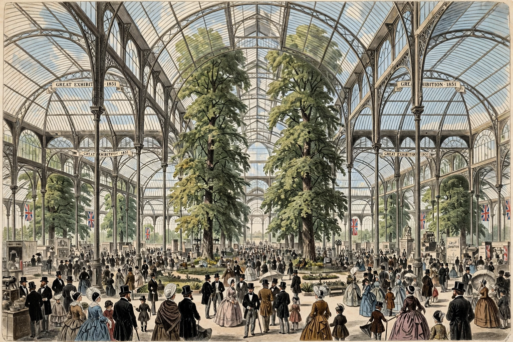

The Victorian era of British history was the period of Queen Victoria's reign, from 20 June 1837 until her death on 22 January 1901. It was a long interval of peace, prosperity, refined sensibilities and national self-confidence for the United Kingdom, during which the Industrial Revolution reached maturity, the British Empire expanded to cover roughly a quarter of the world's land and population, and Britain's population roughly doubled. The era saw major reforms in voting, education, public health and labour, alongside rapid urbanisation, railway building and scientific change, including the controversy over Charles Darwin's theory of evolution.
| Victorian era | |
|---|---|
| Period | 20 June 1837 – 22 January 1901 |
| Monarch | Queen Victoria |
| Preceded by | Georgian era / Regency era |
| Followed by | Edwardian era |
| Key events | Great Exhibition (1851); Reform Acts 1867 and 1884; Crimean War; Indian Rebellion of 1857; abolition of the Corn Laws (1846) |
Victoria came to the throne at eighteen. She married her cousin Prince Albert of Saxe-Coburg and Gotha in 1840; his early death in 1861 sent her into prolonged mourning and partial seclusion. The era's politics were dominated by figures including Robert Peel, Lord John Russell, Benjamin Disraeli and William Ewart Gladstone. The Reform Act of 1867 roughly doubled the electorate, and that of 1884 extended the vote to most adult men, though women did not win the parliamentary vote until 1918. Free trade — symbolised by the repeal of the Corn Laws in 1846 — underpinned mid-Victorian prosperity.
Steam power, coal and iron transformed production and movement. The railway network grew from a few hundred miles in the 1830s to some 15,000 miles by 1900; the London Underground opened in 1863. The Great Exhibition of 1851, held in Joseph Paxton's Crystal Palace in Hyde Park, displayed Britain's industrial supremacy to six million visitors. Factory and public-health legislation slowly improved conditions in the industrial cities, though poverty, child labour and slum housing remained severe problems, documented by writers such as Charles Dickens and the social investigator Henry Mayhew.

[ IMAGE: The Crystal Palace in Hyde Park during the Great Exhibition of 1851, its glass transept enclosing elm trees, crowds in contemporary dress below. ]The Great Exhibition, 1851"Victorian" values emphasised family, respectability, self-help, thrift and earnest moral effort, alongside a growing scientific culture and an often anxious religious life. The novel became the dominant literary form — Dickens, the Brontës, George Eliot and Thomas Hardy among its masters — while the Pre-Raphaelite painters and the Arts and Crafts movement reshaped visual taste. Near the century's end the "New Woman", cycling, typewriters and suburban commuting all signalled a society in transition.
After the Indian Rebellion of 1857, the East India Company was dissolved and India ruled directly by the Crown; Victoria was proclaimed Empress of India in 1876. British forces fought in the Crimea, China, Afghanistan, Egypt and southern Africa, and the "Scramble for Africa" of the 1880s–90s added vast territories. At Victoria's Diamond Jubilee in 1897 the empire's scale was celebrated in London with troops drawn from every continent.
Queen Victoria · Industrial Revolution · British Empire · Crimean War · Prince Albert of Saxe-Coburg and Gotha
Categories: Victorian era · 19th century in the United Kingdom · Queen Victoria